TARGETreal | Na predaj 3 izbový byt v Turčianskych Tepliciach – viac než 70 m² pohodlia bez ďalších investícií
Turčianske Teplice
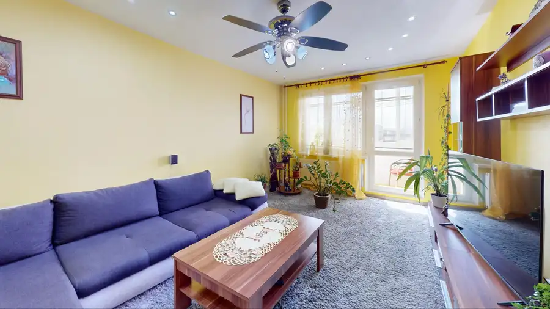
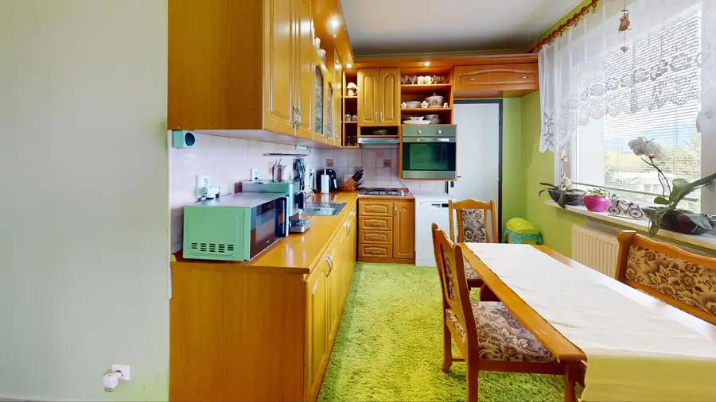
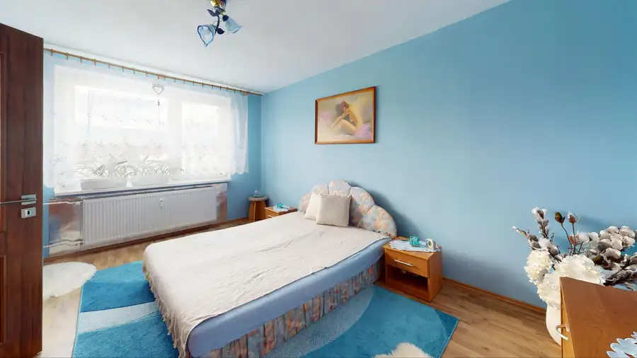
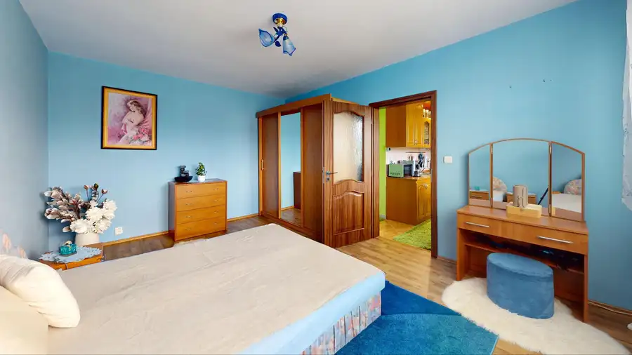
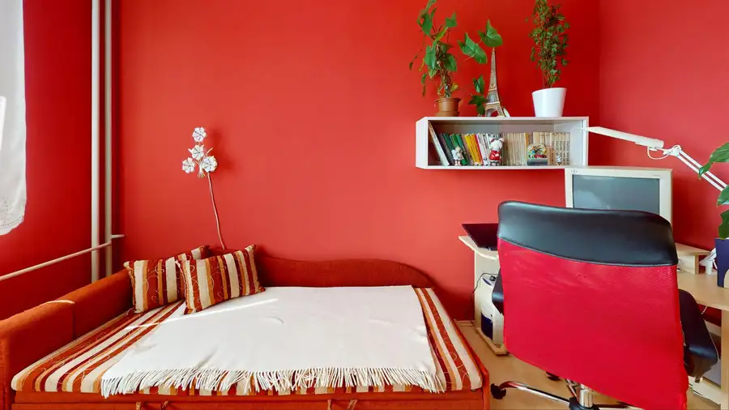
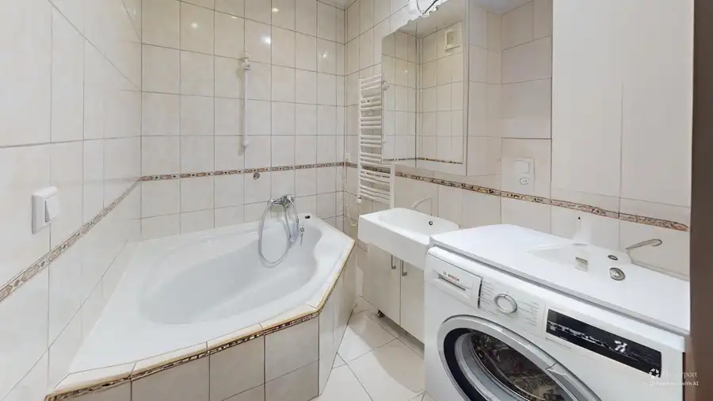
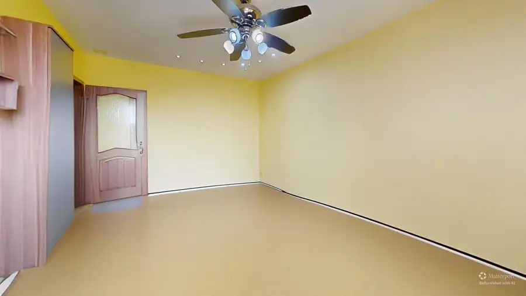
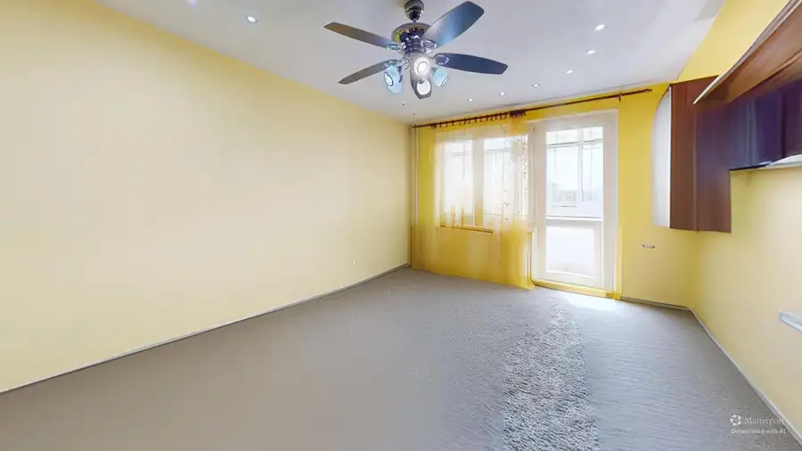
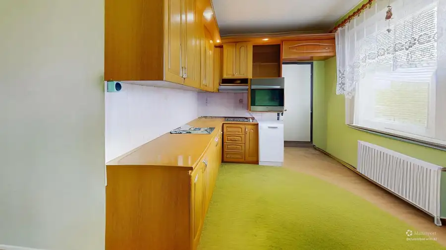
- Dispozícia3-izbový
- Plocha71.49 m²
- Poschodie4. z 8
- StavKompletná rekonštrukcia
- VlastníctvoOsobné
O nehnuteľnosti
Ponúkame na predaj priestranný 3-izbový byt po kompletnej rekonštrukcii, nachádzajúci sa na sídlisku Horné Rakovce v Turčianskych Tepliciach.Byt má podlahovú plochu 71,49 m² a navyše disponuje loggiou s výmerou 3,35 m². Nachádza sa na 4. poschodí zatepleného bytového domu s výťahom. K bytu patrí aj pivnica umiestnená v suteréne domu.Byt prešiel kompletnou rekonštrukciou vrátane elektroinštalácie. Má plastové okná, plávajúce podlahy a keramickú dlažbu. Výhodou je praktická dispozícia s tromi samostatne využiteľnými izbami, priestrannou kuchyňou, samostatným WC a loggiou prístupnou z obývacej izby.DispozíciaByt pozostáva z:•vstupnej predsiene, •samostatnej kuchyne s jedálenským priestorom, •priestrannej obývacej izby s výstupom na loggiu, •spálne, •ďalšej izby vhodnej ako detská izba, pracovňa alebo hosťovská izba, •kúpeľne, •samostatného WC, •pivnice v suteréne bytového domu. Kuchyňa ponúka dostatok pracovnej aj úložnej plochy a priestor na jedálenský stôl. Obývacia izba je svetlá a priestranná, pričom jej prirodzeným pokračovaním je loggia. Kúpeľňa je vybavená rohovou vaňou, umývadlom, kúpeľňovým nábytkom a priestorom na práčku.RekonštrukciaV byte boli realizované najmä:•nové elektrické rozvody, •plastové okná, •plávajúce podlahy a dlažba, •rekonštrukcia kúpeľne a WC, •kuchynská linka, •interiérové dvere, •úpravy stien a stropov, •bodové osvetlenie vo vybraných miestnostiach. Byt je udržiavaný a ponúka možnosť bývania bez potreby rozsiahlej technickej rekonštrukcie. Nový vlastník si môže interiér postupne farebne a dizajnovo prispôsobiť podľa vlastného vkusu.Bytový dom a parkovanieBytový dom je zateplený a vybavený výťahom. Parkovanie je možné na verejných parkovacích miestach pred bytovým domom. LokalitaSídlisko Horné Rakovce ponúka kompletnú občiansku vybavenosť potrebnú na každodenný život. V blízkom okolí sa nachádzajú potraviny, materská škola, školské zariadenia, detské ihriská, športoviská a zastávky verejnej dopravy.Výhodou je bývanie v kúpeľnom meste Turčianske Teplice s kúpeľným parkom, aquaparkom a možnosťami aktívneho oddychu, turistiky a cyklistiky.Hlavné výhody bytuPodlahová plocha 71,49 m²Loggia 3,35 m²Kompletná rekonštrukcia vrátane elektroinštalácieTri obytné miestnostiSamostatná kuchyňaSamostatné WCPivnica v suteréne domu4. poschodieVýťahZateplený bytový domParkovanie pred domomDobrá občianska vybavenosťCena: 148 000 € V cene je zahrnutý kompletný právny servis a provízia realitnej kancelárie.Pre viac informácií alebo dohodnutie obhliadky nás kontaktujte. Ing. Branislav PálešTARGETreal +421 907 741 602 branislav.pales@targetreal.sk
Parametre
- Cena vrátane energií
- Nie
- Druh
- 3 izbový byt
- Dátum zverejnenia
- 01. 10. 2026
- Energetický certifikát budovy
- nie je
- Energie
- 260
- Orientácia
- Východná
- Podlažie
- 4
- Počet izieb / miestností
- 3
- Počet lodžií
- 1
- Počet nadzemných podlaží
- 8
- Počet pivníc
- 1
- Rok kolaudácie
- 1983
- Rok výstavby
- 1983
- Stav nehnuteľnosti
- Kompletná rekonštrukcia
- Telekomunikácie
- Optická sieť
- Typ
- Predaj
- Typ konštrukcie
- Panelová
- Vlastníctvo
- Osobné
- Vybavenie
- Lodžia, Pivnica, Verejné parkovanie, Výťah
- Vykurovanie
- Lokálne
- Zariadenie
- Nezariadené
- Úžitková plocha
- 71.49 m²
Kde to je


Mohlo by Vás zaujímať
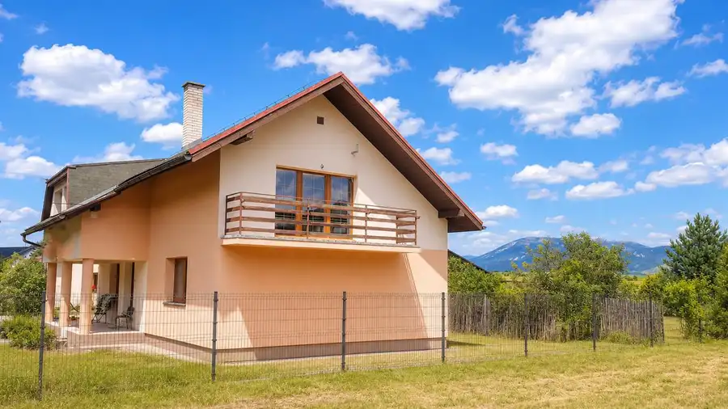
DomNové 269 000 €TARGETreal | Na predaj rodinný dom s 2 samostatnými vstupmi a veľkým pozemkom v Turčianskych Tepliciach Turčianske Teplice 250 m²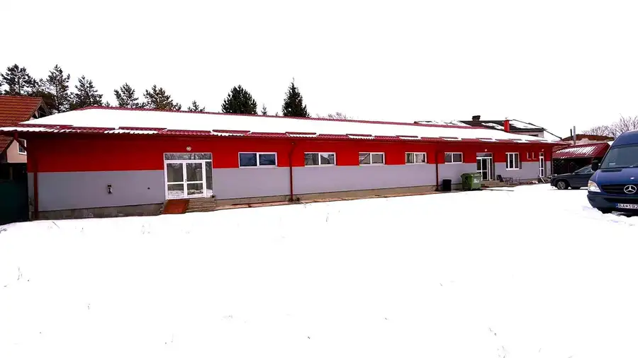
Komerčné priestoryNové 379 000 €Na predaj komerčný objekt s výbornou dostupnosťou – sklad, showroom alebo predajná plocha (Diviaky, Turčianske Teplice) Turčianske Teplice 609 m²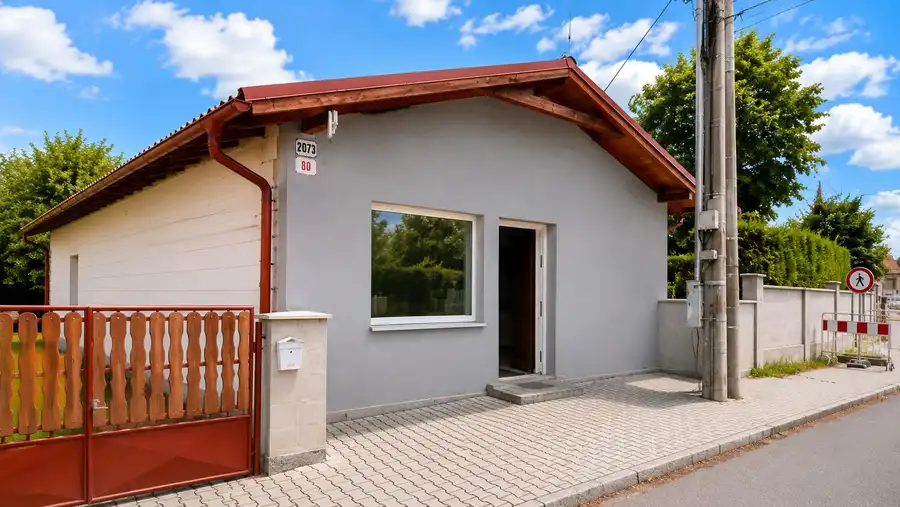
Komerčné priestoryNové 169 000 €TARGETreal ponúka na predaj samostatný prevádzkový priestor blízko centra Turčianskych Teplíc – ambulancia, služby, kancelária alebo predajňa Turčianske Teplice 115 m²